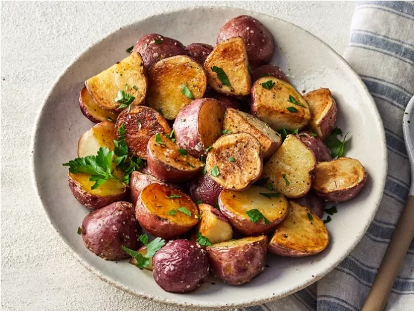

Roased New Red Potatoes

Description
Roasted red potatoes at their best — plain and simple. Red potatoes are tossed with olive oil, salt, and pepper,
then roasted to perfection.
Ingredients:
- 3 pounds small red new potatoes, halved
- ¼ cup olive oil
- 1 teaspoon salt and freshly ground black pepper
Steps:
- Gather all ingredients. Preheat the oven to 400 degrees F (200 degrees C) and adjust the oven rack to the
lowest position.
- Toss potatoes with oil, salt, and pepper in a bowl. Arrange, cut-side down, on a rimmed cookie sheet or
jellyroll pan.
- Roast potatoes in the preheated oven until tender and golden brown, 20 to 30 minutes. Transfer to a serving
dish.
- Serve and enjoy!
Return to Homepage